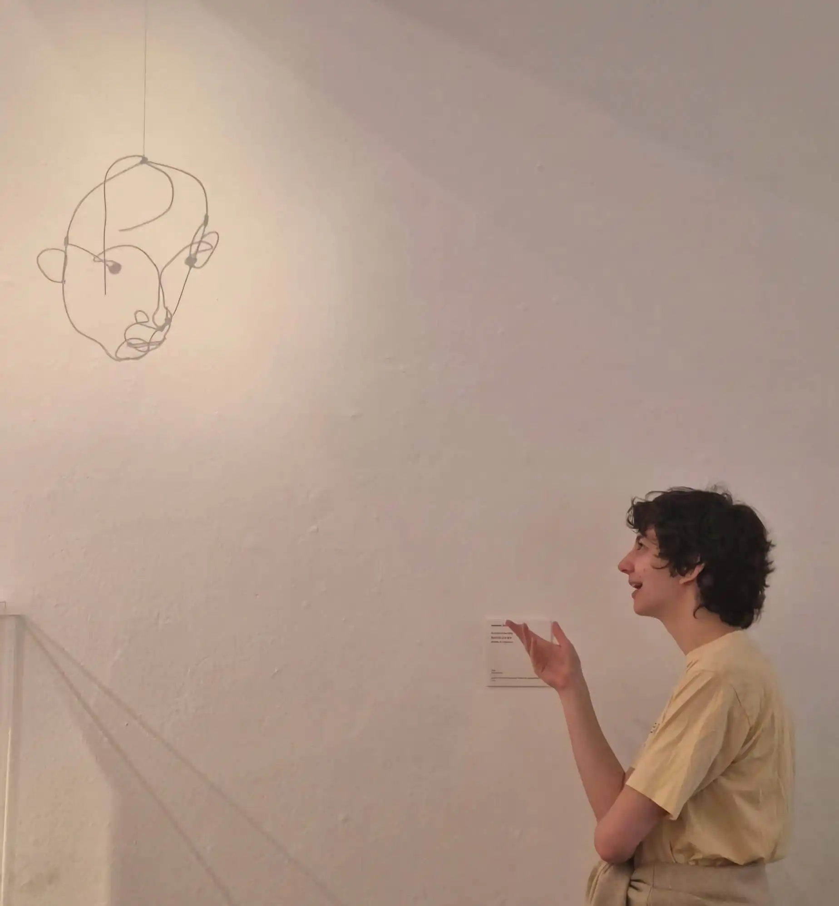

Education
Current
Studying a PhD at KTH, Stockholm
Supervisor: Kathlén Kohn, Cosupervisor: Sandra Di Rocco
Past
Masters in Mathematics at Pontificia Universidad Católica de Chile (PUC)
Supervisor: Federico Castillo
Thesis: Deformation cone of polytopes: H-representation and SageMath implementation
Bachelors in Mathematics at Pontificia Universidad Católica de Chile
Talks
KTH Combinatorics seminar: Constructing deformation cones (Sweden, 2025)
Recorrido por la combinatoria: Deformation cone of polytopes (Chile, 2025)
PUC Logic Seminar: Fagin's theorem (Chile, 2024)
PUC Computer Complexity Seminar: Connections between Combinatorics and #P (Chile, 2023)
PUC Algebraic Combinatorics Seminar: Matrix-tree theorem (Chile, 2022)
Conferences and summer schools
Summer School in Algebraic Combinatorics at MPI (Leipzig, 2024)
ECCO, Encuentro Colombiano de Combinatoria (Colombia, 2024)
Cimpa school: Crossroads of geometry, representation theory and higher structures (Argentina, 2023)
Teaching assitance
KTH: Linear algebra, Mutivariable calculus
PUC computer science department: Logic for compter science (TA and course coordinator)
PUC math department: Precalculus, Calculus I, Calculus III, Geometry II, Introduction to algebra